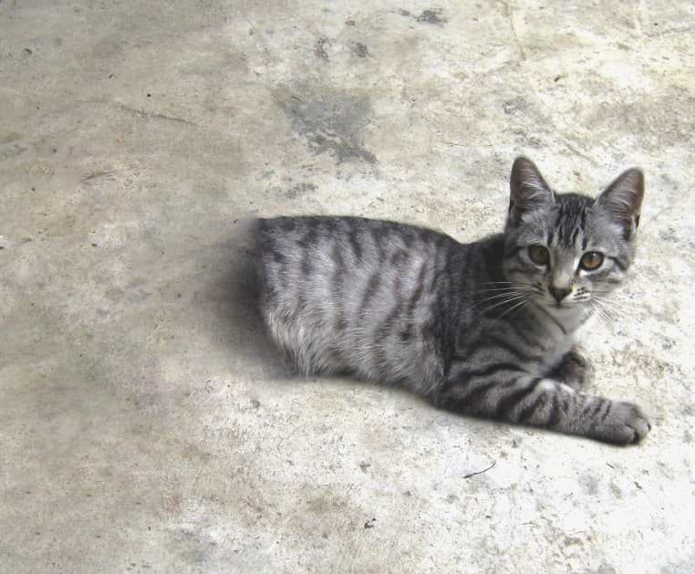

SCP-529

- Item nº:
- SCP-529
- Classe do objeto:
- Safe
Procedimentos Especiais de Contenção:
Nenhuma precaução especial se mostrou necessária até o momento. "Josie" é muito carinhosa e, nesta etapa, pode circular livremente pelos níveis inferiores da instalação. A equipe não tem permissão para dar queijo a ela; ela fica angustiada se não receber queijo suficiente.
Descrição:
O SCP-529 é um pequeno gato doméstico (Felis catus) com pelagem cinza rajada.
As partes do animal atrás do fim da caixa torácica parecem estar ausentes. O corpo termina de forma abrupta, como se tivesse sido cortado ao meio.
Apesar disso, o animal não tem problemas de saúde e se move como se suas patas traseiras ainda estivessem no lugar. Por exemplo, caminha normalmente e, algum tempo depois de comer, faz movimentos como se fosse eliminar resíduos.
A seção transversal não mostra o interior do animal, mas parece totalmente preta a olho nu e absorve todos os comprimentos de onda não visíveis da luz. É ligeiramente macia ao toque. Acariciar suavemente essa área às vezes provoca uma reação positiva (ronronar e afins), mas, com mais frequência, leva a criatura a se virar contra o agente, com as garras prontas. Quem foi arranhado não apresentou nenhuma anormalidade.
A região traseira não parece ser invisível: um exame superficial mostra que não há quarto traseiro. O teste de DNA mostrou que o animal é fêmea.